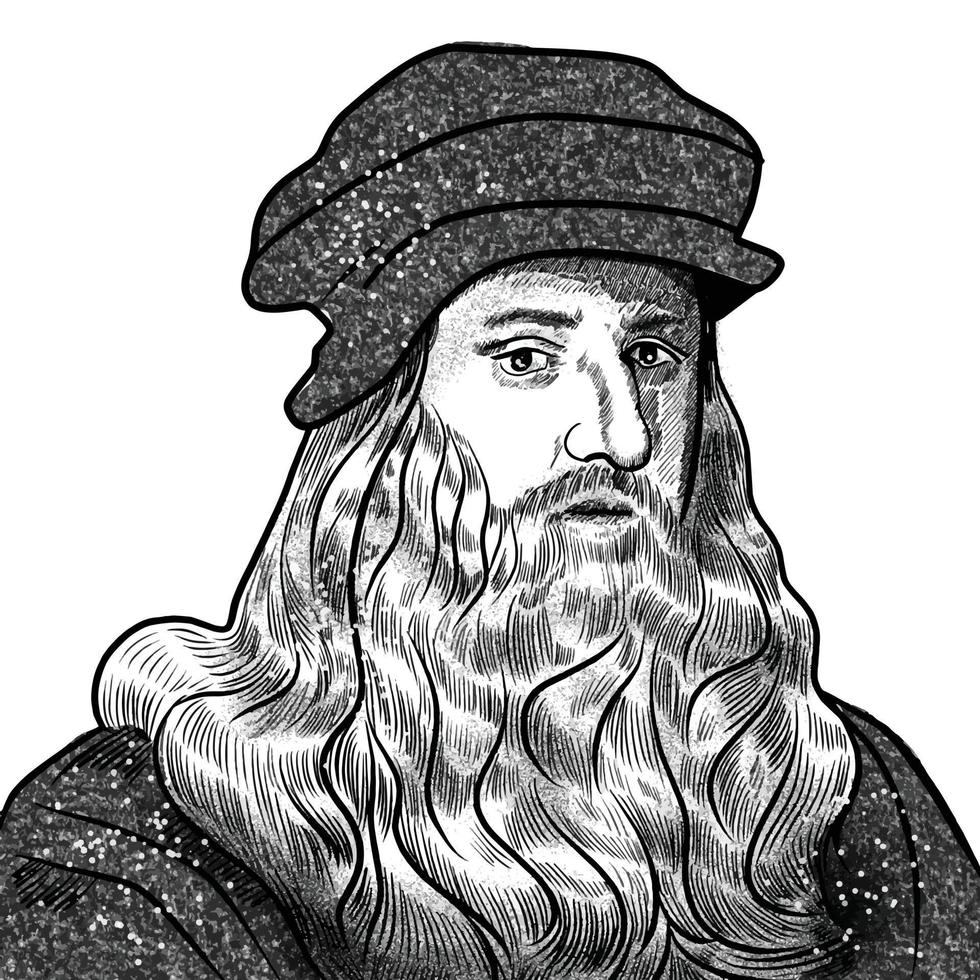

Leonardo Da Vinci

Leonardo di ser Piero da Vinci (15 April 1452 - 2 May 1519) was an Italian polymath of the High Renaissance who was active as a painter, draughtsman, engineer, scientist, theorist, sculptor, and architect.
The Life of Leonardo Da Vinci
-
The Teenage Apprentice
At just 14, Leonardo entered Verrocchio’s famous workshop in Florence. He didn't just learn painting; he mastered chemistry, metallurgy, mechanics, and woodwork, outshining his master at an early age.
-
The Visionary Engineer
By age 20, he was already a master. Always thinking ahead of his time, the young Leonardo was the very first person to propose turning the Arno River into a navigable channel between Florence and Pisa.
-
Spreading His Wings
In 1478, Leonardo broke free from his master’s studio to take independent commissions. He began mixing with elite philosophers and poets, expanding his mind beyond traditional art.
-
The Restless Mind
Leonardo was notorious for leaving projects unfinished, like 'The Adoration of the Magi'. His brain moved so fast onto the next grand idea that he often abandoned his current work.
-
Weapons & Music
Moving to Milan, Leonardo wrote a brilliant letter to the Duke, pitching himself not just as a painter, but as a master of military engineering and weapon design, carrying a silver lute shaped like a horse's head.
-
The Renaissance Icon
Influenced by scientific studies of light and perspective, Leonardo transformed art into a science. He proved that true genius isn't specialized—it spans across every human discipline.
-
The Secret Notebooks
Leonardo left behind over 13,000 pages of notes and drawings. Written in mirror-writing (from right to left) to keep his ideas secret, these pages contain sketches of flying machines, anatomy, and plant life.
-
The Anatomist
To understand the human body, Leonardo dissected over 30 corpses. His incredibly detailed drawings of bones, muscles, and organs combined art with medical science centuries before modern technology.
-
The Mona Lisa Effect
Started in 1503, the Mona Lisa became his lifelong obsession. He used a technique called 'sfumato' (shading without harsh lines) to create her famous, mysterious smile that looks different from every angle.
-
The Last Journey
In his final years, Leonardo moved to France under the patronage of King Francis I, who revered him as a premier philosopher. He passed away in 1519, leaving a legacy that changed the world forever.